8.1
Biophilia
Why we're drawn to living things, and what the evidence supports
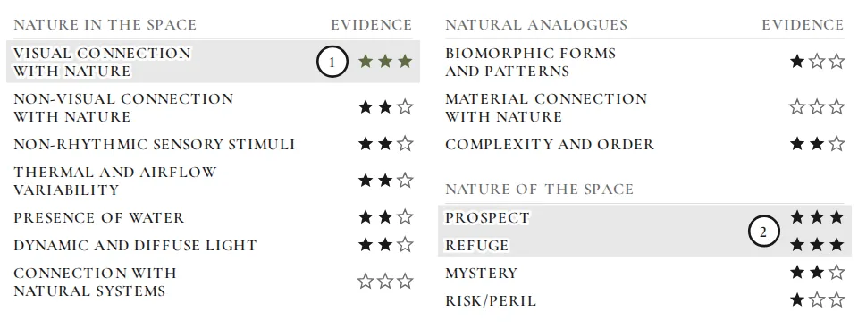
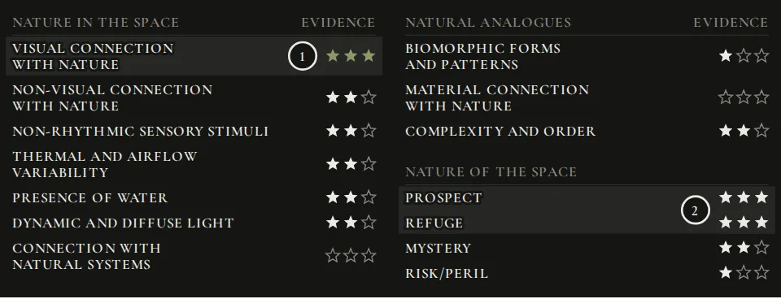
Terrapin's fourteen patterns of biophilic design
In 1991, the researcher Roger Ulrich and his colleagues sat a hundred and twenty people down in front of a stressful film. Then each watched a video of either a natural scene or a city scene, while instruments recorded their bodies. The people who watched nature calmed down faster, on four physiological measures, including heart rate and the sweating of the skin. Their bodies were recovering from stress more quickly, and nobody had asked them to.
Most of us don't need an experiment to tell us that a walk in a park, a view of trees or the sound of a stream feels good. The harder questions are why, and how much it matters to health, and which of the many things designers do in nature's name actually make a difference. This chapter is about those questions, and this first lesson is about the big idea behind them, biophilia, and what the evidence really supports.
How it works
The word biophilia means love of living things. The biologist E. O. Wilson made it famous in a book of that name in 1984, though the psychoanalyst Erich Fromm had used it before him. Wilson's argument was evolutionary: people evolved among plants and animals, so we should be tuned to notice them, to be drawn to signs of water, food, shelter and safety, and to feel at ease where those are found. It's a hypothesis, and it's hard to test directly. The social ecologist Stephen Kellert later carried it into design, and named more than seventy ways a building could connect people to nature.
Two theories explain what nature might do for us in the moment. The first is stress recovery, Ulrich's: a natural scene quickly lowers the body's stress response, as in the experiment you just heard. The second is attention restoration, from the psychologists Rachel and Stephen Kaplan, in 1989. Concentrating hard tires the mind. Settings that let you feel away from your usual demands, that have some extent to them, and that hold your attention gently, like leaves moving or clouds passing, which they called soft fascination, let tired attention recover.
What does the evidence say? The most consistent findings are about mood and stress, in the short term. A review in 2022 pooled forty-nine studies with more than three thousand people: time in nature, compared with urban settings, clearly raised good feelings and lowered bad ones. Remarkably, nature shown in a laboratory, in photographs or on video, did almost as well as the real thing.
The findings on attention are smaller and more mixed. One review in 2016 found that only three of its thirteen pooled analyses showed a significant effect. Another, in 2018, found low to moderate gains in working memory and mental flexibility, perhaps larger for real nature than for pictures of it, though the real visits were often longer.
And the health findings are mostly associations. A 2018 review of a hundred and forty-three studies found that more contact with green space, from living near it to walks in forests, went with lower stress hormones, heart rates and diastolic blood pressure, and lower rates of diabetes and death, but the authors warned that many of the studies were weak. A review of nine large studies, covering 8.3 million people, found that each rise of 0.1 in a satellite measure of greenness, within five hundred metres of home, went with a four per cent lower risk of dying, but the studies disagreed with each other a great deal. Greener neighbourhoods often differ in other ways too, such as wealth, which is hard to separate out.
The best examples
The design world's best-known guide is 14 Patterns of Biophilic Design, published in 2014 by William Browning, Catherine Ryan and Joseph Clancy of the consultancy Terrapin Bright Green. They combed more than five hundred publications and boiled Kellert's ideas down to fourteen patterns in three groups: nature in the space, such as views, water and changing light; natural analogues, such as natural materials and shapes that echo living things; and the nature of the space, such as prospect, refuge and mystery. The best part is that they graded each pattern by the strength of its evidence, from no stars to three.
Read the grades, and you learn something the summary doesn't say. Only three patterns earn three stars: a visual connection with nature, prospect, and refuge. Two of those three are about the shape of space, not about nature: you could meet them in a room with no window and no plant. Only one, the view of nature, needs nature itself, and Ulrich's work is among its main supports. Natural materials, and a connection with natural systems, get no stars at all. Yet the report's introduction says biophilic design can reduce stress and speed healing, which is more than its own table supports.
That doesn't make the patterns useless. It makes them a well-organised list of good hypotheses, with honest grades on them. Use the grades.
Rules of thumb
One. Start with what's best supported: a view of nature from where people sit, and spaces that offer prospect and refuge.
Two. Treat the other patterns as good ideas still being tested, not as proven effects.
Three. Where real nature is impossible, pictures and sounds of it still help mood in the short term. Where it's possible, the real thing is better.
Four. Design for short, frequent contact: a glance out of a window, a walk past a garden, a break outside. Most of the evidence is about minutes, not years.
Five. Don't oversell. Say what the evidence supports, mood and stress, and be careful with claims about healing and productivity.
Where it fails
The biophilia hypothesis is an evolutionary story, and like most such stories it's easier to tell than to test. Much of the experimental evidence comes from short sessions, often with students, and often with pictures rather than places. The long-term health studies can't easily separate green space from the other advantages that tend to come with it. And the design guidance has run ahead of the science. As far as the research edition could find, no one has yet compared buildings designed to the fourteen patterns with ordinary buildings, to see whether the people in them are any better off.
Recap
To sum up. Biophilia is the idea that people are drawn to living things; E. O. Wilson made the word famous in 1984. Two theories explain the effect in the moment: nature helps us recover from stress, and it lets tired attention rest. The evidence is strongest for short-term mood and stress, mixed for attention, and suggestive but not conclusive for long-term health. Terrapin's fourteen patterns grade their own evidence, and only three get three stars: a view of nature, prospect and refuge.
Check yourself
First question. What are the two main theories of how nature helps us in the moment?
Stress recovery, Ulrich's idea that a natural scene quickly lowers the body's stress response; and attention restoration, the Kaplans' idea that gently fascinating natural settings let tired attention recover.
Second question. Where is the evidence for nature's benefits strongest, and where is it weakest?
Strongest for short-term mood and stress. Mixed and smaller for attention. Long-term health findings are associations, which can't easily separate green space from other advantages.
Third question. Which of Terrapin's fourteen patterns get three stars, and what's surprising about them?
A visual connection with nature, prospect, and refuge. Two of the three are about the shape of space, not nature, so only the view of nature needs nature itself.
Sources and further reading
- Stress recovery: R. S. Ulrich and colleagues, Journal of Environmental Psychology 11 (1991).
- Biophilia and Kellert: Wikipedia, E. O. Wilson, and Biophilia hypothesis; Terrapin Bright Green, 14 Patterns of Biophilic Design (2014).
- Attention restoration: Wikipedia, Attention restoration theory; R. and S. Kaplan, The Experience of Nature (1989).
- Reviews: Gaekwad and colleagues, Frontiers in Psychology 13 (2022); Ohly and colleagues, Journal of Toxicology and Environmental Health B 19 (2016); Stevenson and colleagues, Journal of Toxicology and Environmental Health B 21 (2018); C. Twohig-Bennett and A. Jones, Environmental Research 166 (2018); D. Rojas-Rueda and colleagues, The Lancet Planetary Health 3 (2019).
- The fourteen patterns: W. Browning, C. Ryan and J. Clancy, 14 Patterns of Biophilic Design, Terrapin Bright Green (2014); research edition, chapter 6 (C6.1).
8.2
Prospect and refuge
Seeing without being seen: porches, verandas and the in-between
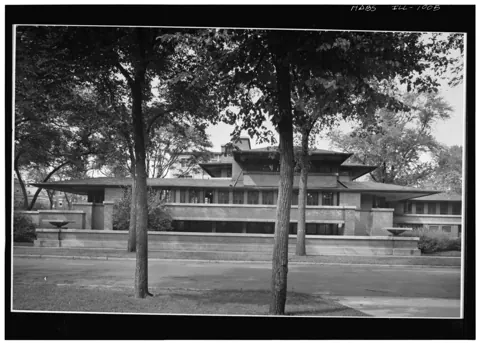
Robie House, Chicago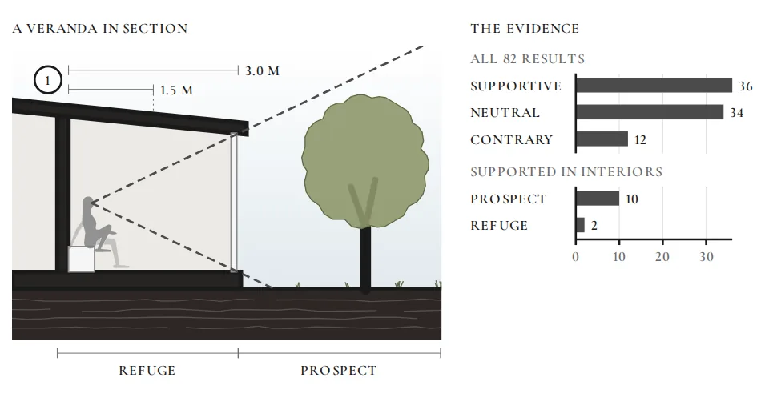
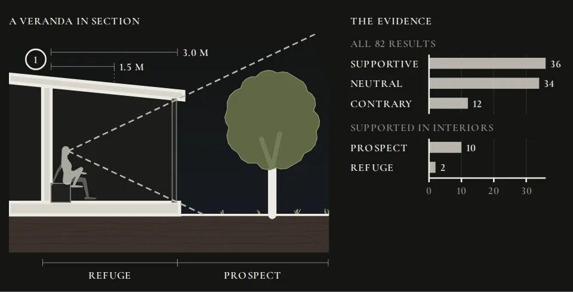
Prospect and refuge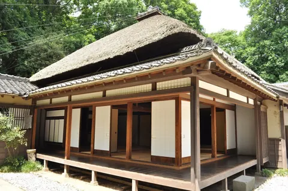
Engawa, Bandō houseVeranda, Biggenden
Walk past Frank Lloyd Wright's Robie House in Chicago, finished in 1910, and try to see inside. It's surprisingly hard. The main rooms are lifted a storey above the street, behind low walls and planters, under roofs that reach far out over long bands of windows. The front door isn't at the front at all; it's tucked away at the side, deep in shadow. From inside, though, the view out is long and open, along the street and over the terraces. The people in the house can see without being seen.
That combination has a name, prospect and refuge, and it's one of the most popular ideas in design. This lesson is about where it comes from, how buildings have always made places that offer both, like porches, verandas and the Japanese engawa, and how much of it the evidence supports.
How it works
The idea comes from a geographer, not an architect. In 1975, Jay Appleton, of the University of Hull, published The Experience of Landscape. He argued that we enjoy landscapes that satisfy two old needs at once: prospect, an open view, where we can see what's coming, whether food or danger; and refuge, a sheltered place where we can hide. For our ancestors, the best place was one that gave both: to see without being seen. Appleton was writing about landscapes, and about why we find some of them beautiful, not about rooms.
The architectural historian Grant Hildebrand carried the idea indoors, in a book of 1991 about Wright's houses, The Wright Space. He showed how Wright set low, sheltering spaces, often around a fireplace, beside tall, bright ones that open to long views, and, in that book and a later one, he added more ideas to Appleton's pair: mystery, the sense that there's more to discover; complexity; enticement, the pull onwards; and illumination. His argument was drawn from looking, not from measuring.
In buildings, prospect and refuge usually meet at the edge, in the in-between spaces: a porch, a veranda, a loggia, a bay window, a window seat, a balcony. Each has shelter overhead and behind, and an open view in front. These are also some of the most useful spaces in a warm climate, shaded, breezy and dry, and they buffer the rooms behind them from sun and rain.
The best examples
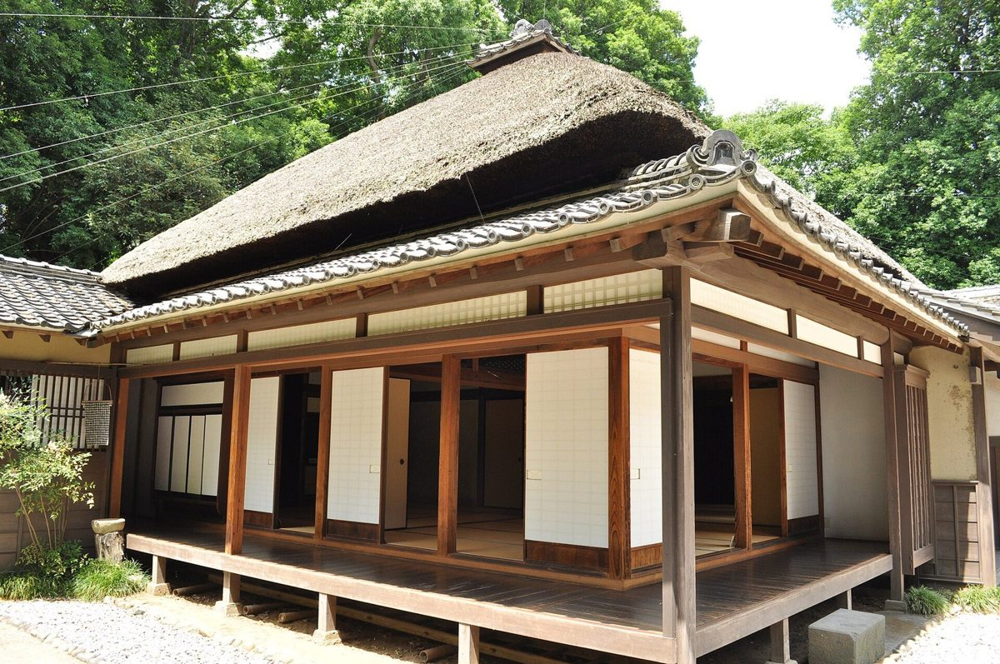

In a traditional Japanese house, the engawa is a strip of wooden or bamboo floor running along the outside of the rooms, between the sliding paper screens, the shōji, and the wooden storm shutters. Beyond the shutters there may be another strip, the nure-en, or wet edge, open to the weather. People sit on the engawa to look at the garden and to receive visitors. With the screens open, it's part of the room; with them closed, it's part of the garden. As far as the research edition could find, no one has ever measured one.
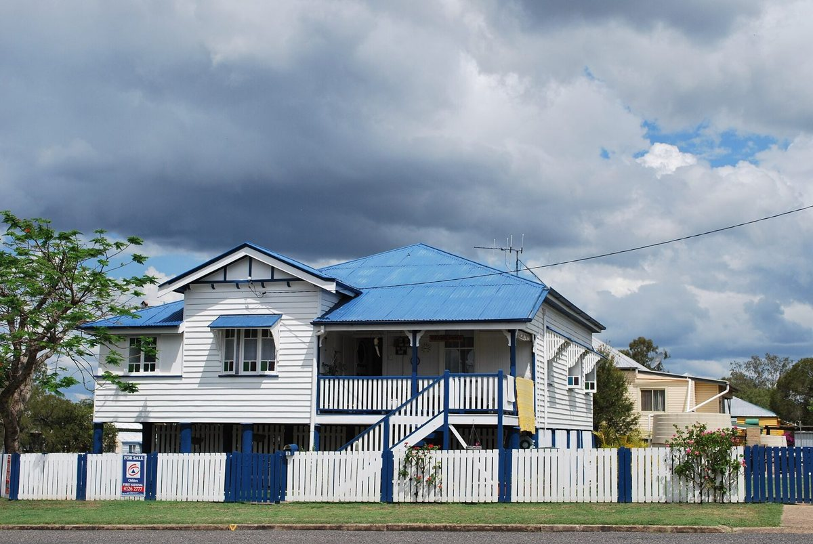

The veranda is the same idea at the scale of a whole house. Where the word comes from is disputed: it may come from Hindi, Bengali or Persian, or through Portuguese. English traders in India wrote of bungales as early as 1676, and of viranders by 1793. The bungalow, a single-storey house wrapped in a shaded veranda, spread from Bengal to Australia, Africa and the Americas. The Queensland house, raised on stumps, with verandas that sometimes wrap right around it, is one of the best-known veranda houses. And modern studies back the idea up, at least on a computer: in a simulation for Hainan, in tropical China, deepening a veranda's overhang from one and a half metres to three improved comfort on the ground-floor veranda by 9.3 per cent.
The evidence
In 2016, Annemarie Dosen and Michael Ostwald reviewed thirty-four studies that had tested prospect and refuge. Twenty-one tested interiors, mostly with students aged eighteen to twenty-one. Across all of them, there were thirty-six results that supported the theory, thirty-four that were neutral, and twelve that went against it. Prospect did much better than refuge. In the studies of interiors, prospect was supported ten times and refuge twice. Their verdict: the evidence is inconsistent, and the results architects like to quote mostly come from studies of natural landscapes, not rooms. Terrapin's guide, from the last lesson, gives refuge its top grade of three stars. The review suggests that's generous.
A test of five of Wright's concrete-block houses, using computer models of what can be seen from each point, found that twenty-six of thirty-five measures supported Hildebrand's reading, but judged the pattern less strong and less consistent than he had claimed.
Rules of thumb
One. Give the places where people sit a sheltered back and an open front: a wall, an alcove or a high-backed seat behind, and a view ahead.
Two. Make the threshold a place to be: a porch, veranda, engawa or window seat, deep enough to sit in. In hot climates, deeper shade helps: three metres did better than one and a half in the Hainan simulation.
Three. For privacy with a view, raise the living rooms a little above the street and set the entrance back, as at the Robie House.
Four. Offer a choice of open and sheltered places. Different people, and the same person at different times, want different amounts of each.
Five. Lean on prospect more than refuge. The view is better supported by the evidence than the shelter.
Where it fails
Prospect and refuge is a theory about landscapes, and indoors its evidence is inconsistent. Most of the studies use students and pictures, not people living in real buildings. Refuge in particular has weak support inside. Hildebrand's reading of Wright is an eye's reading, persuasive but not proven. The veranda's comfort benefits come largely from simulations, and in one measured study, two raised timber houses in Malaysia ran a degree or two warmer than the air outside. And the veranda has a complicated history: its origins are argued over, and in colonial houses it could mark a line between people as well as between inside and out.
Recap
To sum up. Prospect is an open view; refuge is shelter. Jay Appleton argued in 1975 that we're drawn to landscapes that offer both, to see without being seen, and Grant Hildebrand found the same pairing in Wright's houses. Buildings create it at the edge: the porch, the veranda, the engawa, the window seat. The evidence indoors supports prospect far better than refuge, so treat the view as the stronger half of the idea.
Check yourself
First question. What do prospect and refuge mean?
Prospect is an open view, where you can see what's coming; refuge is a sheltered place to hide. The idea is that we like places that offer both: to see without being seen.
Second question. What is an engawa?
A strip of wooden or bamboo floor along the outside of a traditional Japanese house, between the paper screens and the storm shutters, where people sit to look at the garden and receive visitors.
Third question. What did the 2016 review find about the evidence for prospect and refuge in interiors?
It was inconsistent. Prospect was supported far more often than refuge, ten times against two in interiors, and the favourite results came from studies of landscapes, not rooms.
Sources and further reading
- Appleton: Wikipedia, Jay Appleton; J. Appleton, The Experience of Landscape (1975).
- Hildebrand and the evidence: G. Hildebrand, The Wright Space (1991); A. S. Dosen and M. J. Ostwald, City, Territory and Architecture 3 (2016); M. J. Dawes and M. J. Ostwald, Building and Environment 80 (2014).
- Robie House: Wikipedia, Frederick C. Robie House.
- Engawa: Wikipedia, Engawa; research edition, chapter 2 (C2.10).
- Veranda and bungalow: Wikipedia, Veranda; the introduction to The Bungalow in Twentieth-Century India (Ashgate); Q. Sun and colleagues, Ain Shams Engineering Journal 16 (2025); D. H. C. Toe and T. Kubota, Solar Energy 114 (2015); research edition, chapter 3 (C3.35).
8.3
The window and the view
What makes a good view, and what a view does for us
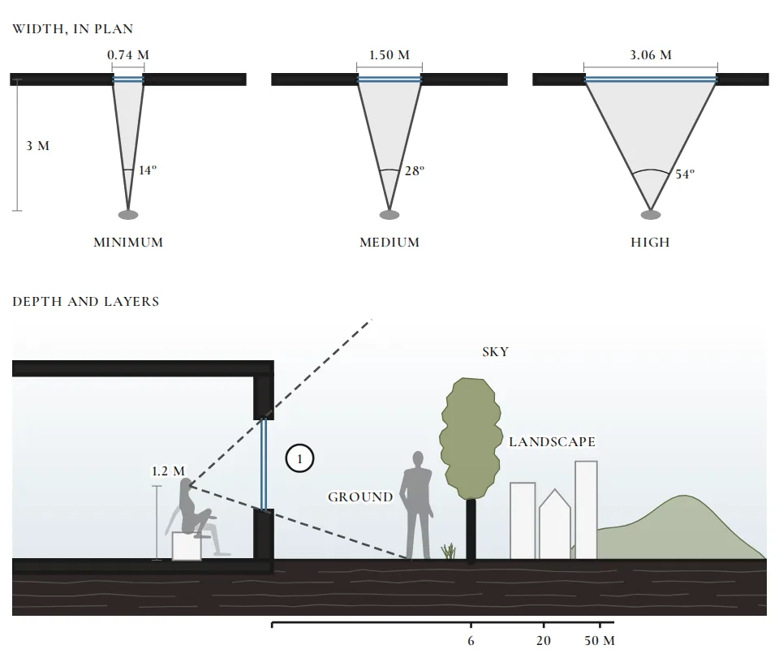
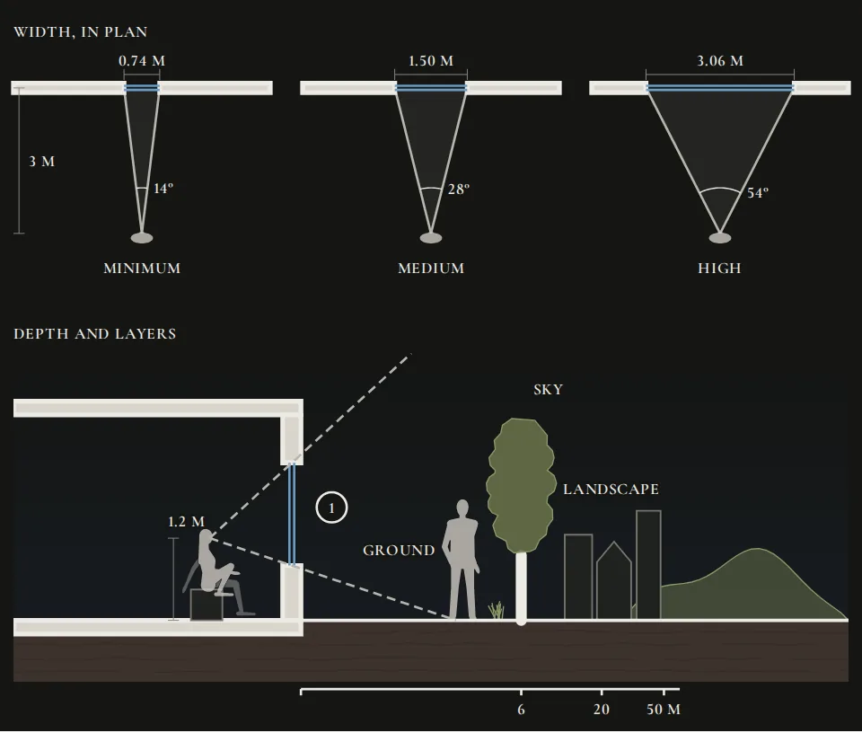
The view out
In 2020, a team of researchers ran a simple experiment. They built two identical offices and held both at twenty-eight degrees, which is warm for an office. One had a window with a view outside; the other had none. Eighty-six people each spent time in both rooms, in turn. In the room with the window, people felt about three-quarters of a degree cooler, though the air was the same. They were happier, and they did about six per cent better on a test of working memory. Their planning and creativity didn't change.
A window isn't just a source of daylight, or a way to let air in. It's a view: information about the weather, the time of day and the life going on outside, and a long distance for the eyes to rest on. You met the most famous study of views, Roger Ulrich's hospital windows, and the unhappy people in windowless offices, in the chapter on light. This lesson looks at the view itself: what makes a good one, how to measure it, and what the newer evidence says it does.
How it works
Europe's daylight standard, EN 17037, published in 2018, grades the view out of a building. It judges the view from each seat at the height of a seated person's eyes, 1.2 metres above the floor, using three tests.
The first test is width: the horizontal angle the window opens up in front of you. For the minimum grade, at least fourteen degrees; for medium, twenty-eight; for high, fifty-four. At three metres from the glass, sitting square to it, that means a window at least about three-quarters of a metre wide for the minimum, a metre and a half for medium, and three metres for high.
The second is depth: how far away the things you see are. At least six metres for the minimum, twenty for medium, and fifty for high.
The third is layers. A good view has three: sky at the top, for weather and time; landscape in the middle, the trees, buildings and hills; and ground at the bottom, where people and plants and activity are. The minimum grade asks for the landscape layer, medium for the landscape and one other, and high for all three.
Notice what the standard doesn't ask: what the view is of. A window facing a blank wall six metres away can pass the minimum. In one study, a hundred and sixty-nine ratings of views by architecture students came out, on average, a grade lower than the calculation. Width, depth and layers measure access to a view, not its quality.
What the view shows matters too. Ulrich's patients with a view of trees recovered a little faster than those facing a brick wall. But a paper in 2026 pointed out that the two views differed in more than nature: the trees were further away, and they moved. Depth and movement may have mattered too, not just the leaves.
The best examples
Short looks count. In 2015, researchers in Australia gave a hundred and fifty students a dull task that needed steady attention, and a forty-second break halfway through, looking at a picture of a city roof. For some, the roof was bare concrete; for others, it was covered in a flowering meadow. The students who had looked at the meadow made fewer mistakes afterwards. Forty seconds of green was enough to show up in the results.
Views also change how warm we feel, as the experiment at the start showed: with a window, people in a warm room felt cooler. That's worth knowing when you design for a hot climate, though it doesn't replace shade and air.
And the evidence has limits. A study published in 2026 looked back at four hundred and forty-eight young patients recovering from spinal surgery in shared rooms, and found that a bed by the window, rather than by the door, made no difference to them. That wasn't a repeat of Ulrich's study, which compared views, not distances. But it's a reminder that a window, on its own, isn't a treatment. As far as the research edition could find, no one has ever directly repeated Ulrich's original study.
Rules of thumb
One. Give every seat that's used for long a view out, and make the window wide enough: at three metres, at least three-quarters of a metre wide, and better one and a half.
Two. Look for depth. Aim for at least six metres of open view, better twenty, best fifty or more.
Three. Show all three layers if you can: sky, landscape and ground.
Four. Put life in the view: trees, water, weather and people, things that move and change.
Five. Keep the view clear at seated eye height, about 1.2 metres: avoid window bars, frosted bands and fixed blinds across that line.
Where it fails
The view standard measures width, depth and layers, not what's out there, and people judge views more harshly than the calculation does. The evidence that views help is real but modest. Ulrich's study compared twenty-three pairs of patients in one hospital and, as far as we could find, has never been directly repeated; the laboratory studies are short and use students. The meadow-roof study used a picture, not a real roof. And a view isn't free: bigger windows let in more heat in summer and lose more in winter, and they can bring glare, as the chapters on sun and light showed. The art is to get the view without the penalties: shaded, well-placed glass, rather than simply more of it.
Recap
To sum up. A view gives information, distance and life, and it's graded in Europe by width, depth and layers: at least fourteen, twenty-eight or fifty-four degrees; six, twenty or fifty metres; and the three layers of sky, landscape and ground. The standard measures access, not quality, so choose what the view shows: nature, depth and movement. The evidence is modest but real: a window in a warm room made people feel cooler and happier, and forty seconds looking at a picture of a green roof helped attention.
Check yourself
First question. What three things does Europe's daylight standard use to grade a view?
Its width, the horizontal angle the window opens up; its depth, how far away the things seen are; and its layers, sky, landscape and ground.
Second question. At three metres from the glass, about how wide must a window be for the minimum grade of view, and for the medium grade?
About three-quarters of a metre for the minimum, fourteen degrees, and about a metre and a half for medium, twenty-eight degrees.
Third question. What did the 2020 experiment with two warm offices find?
With a window, people felt about three-quarters of a degree cooler in the same air, were happier, and did about six per cent better on working memory; planning and creativity didn't change.
Sources and further reading
- The two offices: W. H. Ko and colleagues, Building and Environment 175 (2020).
- EN 17037 view out: M. Waczyńska, N. Sokol and J. Martyniuk-Pęczek, Building and Environment 188 (2021); Parsaee and colleagues, Buildings 11 (2021); B. S. Matusiak and colleagues, Land 13 (2024); computed widths, calc_ch8.py.
- Ulrich and the depth-and-movement argument: R. S. Ulrich, Science 224 (1984), as summarised by the Center for Health Design; K. Nute and Z. J. Chen, International Journal of Health, Wellness, and Society 16 (2026); A. P. Bosco and colleagues, North American Spine Society Journal 25 (2026); research edition, chapter 5 (C5.29).
- The meadow roof: K. E. Lee and colleagues, Journal of Environmental Psychology 42 (2015).
- Windowless rooms: B. L. Collins, Windows and People: A Literature Survey, US National Bureau of Standards (1975).
8.4
Sun, air and healing
Sanatoria, open-air schools and hospital wards, and what held up
Görbersdorf sanatorium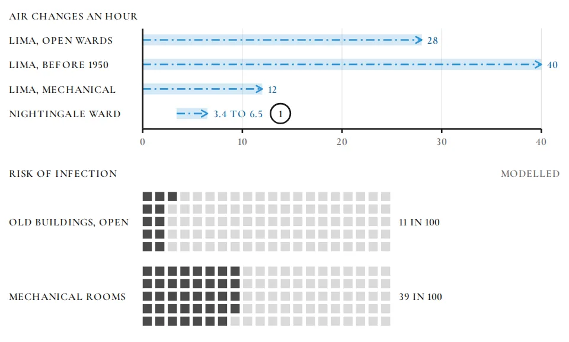
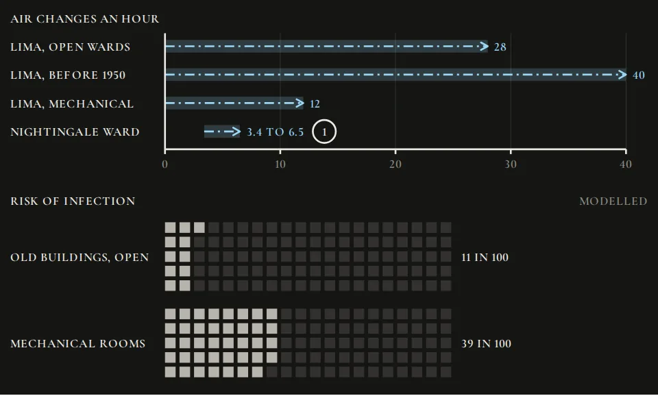
Fresh air in hospital wards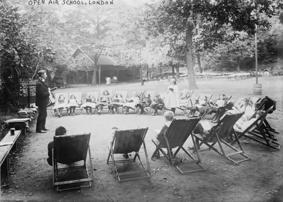
Open-air school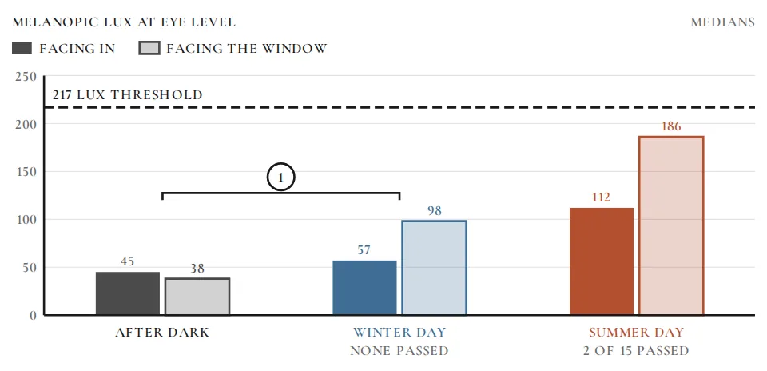
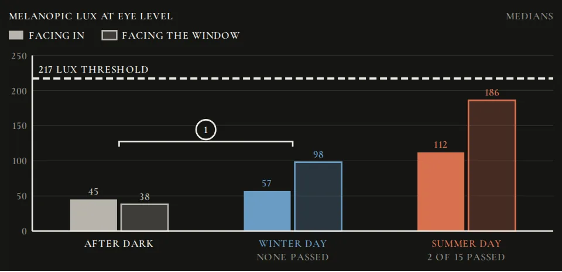
Light for the body clock
In 1854, in the mountains of Silesia, a doctor named Hermann Brehmer opened a sanatorium for tuberculosis at Görbersdorf. His cure was mountain air, good food and exercise. In 1876, at Falkenstein, in the Taunus hills near Frankfurt, Peter Dettweiler opened another, and replaced the exercise with rest: patients lay for hours on reclining chairs in open-sided halls, wrapped in blankets, in all weathers. The cure porch was born, and a building type with it.
The idea spread fast. By 1905 there were more than a hundred sanatoria in Germany, treating about thirty thousand patients a year. Then someone counted the results. This lesson is about the long belief that sun and air heal, the buildings made for it, from sanatoria to open-air schools and hospital wards, and which parts of the belief have held up.
How it works
Start with what didn't hold up. By 1907, the figures showed that only 3.4 per cent of sanatorium patients were cured, against the thirty per cent that had been estimated, and about two-thirds were invalids within five years. What the sanatoria did achieve was isolation: they took infectious people out of their homes, which protected their families. The cure porch outlived the cure.
You met Auguste Rollier's sun cure at Leysin in the chapter on light, and the same caution applies: his results had no comparison group. But part of the sun story is solid. In 1890, Robert Koch showed that sunlight kills the tuberculosis bacillus. And fresh air does something measurable: it dilutes whatever infection is in the air of a room.
That second point has the strongest modern evidence. In 2007, researchers in Lima, Peru, measured the ventilation of seventy hospital rooms, wards and clinics among them. With the windows and doors open, the rooms had a median of twenty-eight air changes an hour, and forty in the older buildings from before 1950, with their big windows and high ceilings. The modern isolation rooms with mechanical ventilation had twelve. The researchers' model put the risk of infection, after a day in a room with an untreated tuberculosis patient, at eleven per cent in the old buildings with their windows open, against thirty-nine per cent in the mechanically ventilated rooms. Size of window, height of ceiling and a willingness to open things up beat the machinery.
But a window only ventilates when it's open. A surviving Nightingale ward in Bradford, which you met in the chapter on air, measured three point four to six point five air changes an hour with its windows open, and with them shut, the exposure to airborne germs rose about fourfold.
Daylight may help in other ways. In a study of 1996, patients with severe depression in sunny hospital rooms stayed an average of 16.9 days, against 19.5 in dull rooms. In 2005, a study of eighty-nine patients recovering from spinal surgery found that those on the brighter side of the ward, with forty-six per cent more sunlight, used twenty-two per cent less pain medication per hour and reported less stress. Neither study says the patients were randomly assigned, so these are promising findings, not proof.
The best examples
Open-air schools took the sanatorium idea to children. In 1904, in Charlottenburg, now part of Berlin, a forest school was founded for children at risk of tuberculosis, where they were taught and fed among the trees. The idea spread: by 1937, Britain had ninety-six open-air day schools and fifty-three residential ones. The accounts we found give no measure of whether the children did better.
The most useful modern example is a failure, carefully measured. In Bergen, in Norway, sixty degrees north, researchers measured the light at eye level, weighted for its effect on the body clock, in the living rooms of all fifteen of the city's dementia units, in winter, in summer and after dark. Facing into the room, the median was fifty-seven lux on a winter day, a hundred and twelve in summer, and forty-five after dark. Against the threshold they used, about two hundred and seventeen lux, only two of the fifteen units passed in summer, facing into the room, and none in winter; even facing the window, only six passed in summer and one in winter. On a winter day, the rooms were no brighter, statistically, than they were at night. And where you sat mattered more than which building you were in: facing the window, the daytime light was about two-thirds to three-quarters higher.
Rules of thumb
One. Ventilate generously. Big windows that open, cross-ventilation and high ceilings dilute airborne infection, and in Lima they beat mechanical ventilation.
Two. Make opening easy and safe, so that windows really are opened: good handles, secure restrictors, and openings that don't blow papers or chill the people nearest.
Three. Bring daylight to where people lie or sit for long, and put the beds and chairs near the windows, facing out.
Four. Give access to open air and sun: balconies, terraces and gardens, since glass blocks the ultraviolet light the skin needs, as the chapter on light explained.
Five. Don't promise cures. Design for fresh air, daylight, comfort and, where needed, isolation, and then measure what happens.
Where it fails
The history is full of confident cures that didn't survive counting: the sanatoria, and Rollier's uncounted recoveries. The daylight studies weren't randomised. The Lima risks come from a model, not from counting infections. Open windows depend on the weather, and in cold climates, in noisy streets or in polluted air, people close them. And the modern buildings can fail as badly as the old ones: in Bergen, rooms built for some of the most vulnerable people in the city gave them winter days no brighter than night.
Recap
To sum up. The sanatoria, from Görbersdorf in 1854, promised cures that didn't survive counting: by 1907, only 3.4 per cent of patients were cured. What held up is more modest. Sunlight kills the tuberculosis germ, and fresh air dilutes infection: in Lima, rooms with big windows open had two or three times the air changes of mechanical rooms, and a much lower modelled risk. Daylight may shorten stays and ease pain. And in Bergen's dementia units, the winter light was so low that where people sat mattered more than which building they were in.
Check yourself
First question. What did the German sanatoria achieve, if not cures?
Isolation. They took infectious patients out of their homes, which protected their families. By 1907, only 3.4 per cent of patients were cured.
Second question. What did the Lima study find about ventilation?
Rooms with open windows had a median of twenty-eight air changes an hour, forty in older buildings, against twelve in mechanical isolation rooms, and the modelled risk of infection was eleven per cent against thirty-nine.
Third question. What did the Bergen study find about light in dementia units?
The light at eye level was far below the threshold: facing into the room, none of the fifteen units passed in winter and only two in summer. Winter days were no brighter than night, and facing the window raised the daytime light by about two-thirds to three-quarters.
Sources and further reading
- Görbersdorf, Falkenstein and the outcomes: Wikipedia, Hermann Brehmer; E. Eylers, The Journal of Architecture 19 (2014), from UCL Discovery; research edition, chapter 3 (C3.20), which credits the paper to Kroll in error.
- Koch and sunlight: R. A. Hobday, Sunlight therapy and solar architecture, Medical History 41 (1997); research edition, chapter 3 (C3.23).
- Lima: A. R. Escombe and colleagues, PLOS Medicine 4 (2007).
- The Nightingale ward in Bradford: C. A. Gilkeson and colleagues, Building and Environment 65 (2013); research edition, chapter 3 (C3.18).
- Daylight, depression and pain: K. M. Beauchemin and P. Hays, Journal of Affective Disorders 40 (1996); J. M. Walch and colleagues, Psychosomatic Medicine 67 (2005).
- Open-air schools: Wikipedia, Open-air school.
- Bergen: Kolberg and colleagues, Lighting Research and Technology 54 (2022, online 2021); research edition, chapter 7 (C7.18).
8.5
The other senses
Sound, touch, warmth and scent
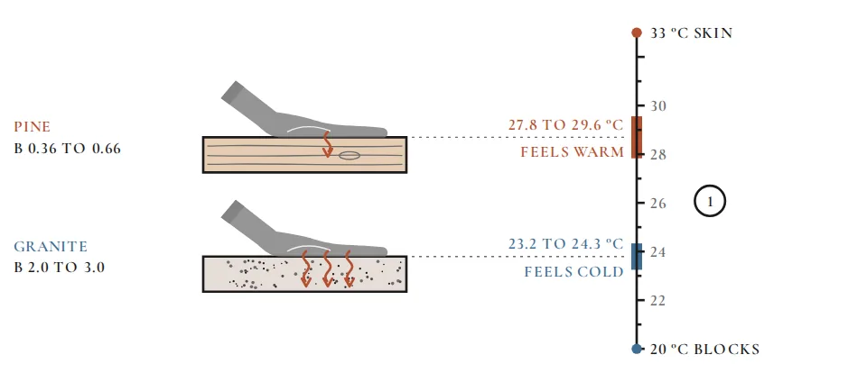
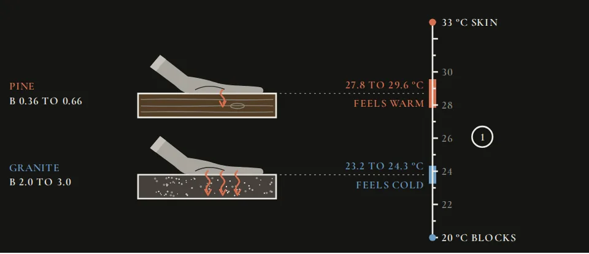
Why wood feels warmGeneralife stairway
In 1979, the architect Lisa Heschong published a short book called Thermal Delight in Architecture. Her point was simple, and it had been forgotten. Warmth and coolness aren't only engineering problems, to be solved by keeping every room at the same temperature. They're experiences people seek out and remember: the fire on a winter night, the heat of a sauna, the pleasure of a bath. She argued that heating and air conditioning, by making everywhere the same, had dulled our sense of them.
Buildings are mostly designed for the eye, and judged in photographs. But we hear them, touch them, feel their warmth and coolness on our skin, and smell them. This lesson is about those other senses: the sound of water, the feel of materials, warmth you can choose, and scent, and about how much the evidence supports each.
How it works
Start with sound. Moving water is one of the oldest tools for making a place feel calm, and it's often used to cover traffic noise. The research shows it works only sometimes. In laboratory tests, adding a pleasant water sound made a scene full of traffic noise more pleasant overall, but less pleasant water sounds did nothing, or made things worse. In a park in Stockholm, where four hundred and five visitors were asked about a fountain, it masked the traffic, but it masked the birdsong too, and the park wasn't rated any better. And in an office, over eighteen weeks, water sounds played to mask conversation were rated no better than a plain, fan-like sound, and some were rated worse; some of the staff said it reminded them of toilets. The kind of water sound, and where it's heard, decide whether it helps.
Then touch. Put your hand on a wooden table and then on a stone one in the same room. They're at the same temperature, but the stone feels much colder. That's because materials differ in how fast they draw heat from your skin, a property called thermal effusivity. Where your skin meets a material, the surface settles at a temperature between the two, weighted by their effusivities. Take skin at thirty-three degrees and a room at twenty. Pine meets your hand at about twenty-eight to thirty degrees, so it feels warm. Granite meets it at about twenty-three or twenty-four, so it feels cold. That's why handrails, benches, and floors where people go barefoot feel better in wood or cork in a cold climate, and why a stone floor feels good underfoot in a hot one.
Warmth you can choose is Heschong's point. A sunny window seat, a fireplace, a shaded courtyard with water, a cool stone step: places that are warmer or cooler than the rest let people pick the comfort they want. Terrapin's guide, from the first lesson of this chapter, gives variability of warmth and air movement two stars.
And scent. Natural materials and plants smell, and many people love it, but the evidence for effects on health is thin. The best-known study had twelve men sleep for three nights with the oil of hinoki, Japanese cypress, vaporised in their rooms. Measures of their immune activity rose and their stress hormones fell, but they were compared only with a working day beforehand, with no control group.
The best examples
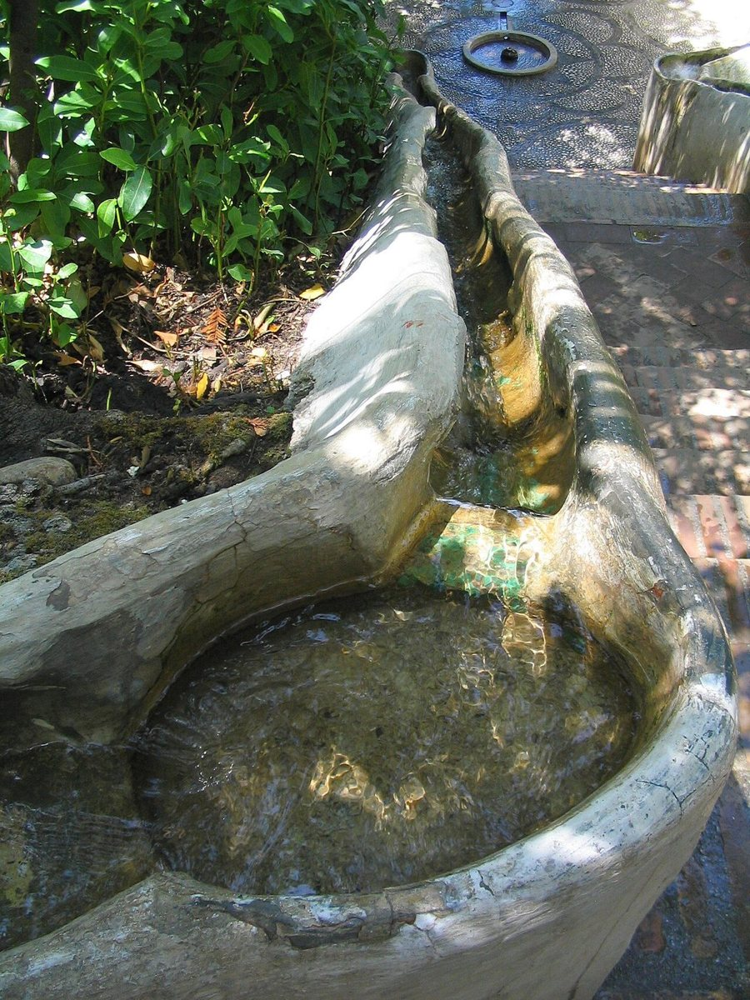

At the Alhambra, in Granada, water is heard and touched as well as seen, and its World Heritage listing praises its use of water and plants. In the Generalife, the summer palace above it, a stairway has water running down channels cut into the tops of its handrails, so you can put your hand in it as you climb. Not everything is as old as it looks: the jets in the long court of the Generalife date from the nineteenth century. You met the measured coolness of the Alhambra's halls in the chapter on water; as far as the research edition could find, no one has measured its sound.
In Japan, researchers built three small rooms with different amounts of wood on their surfaces: none, forty-five per cent and ninety per cent. In the room with the most wood, blood pressure fell the most, but pulse rose, and people found it less comfortable than the room with a moderate amount. The forty-five per cent room tended to feel the most comfortable and restful. Even the room with no wood lowered one measure of blood pressure. In another study, panels of hinoki lowered blood pressure only in people who liked them. More isn't always better, and taste matters.
Rules of thumb
One. Use water sound with care: a water sound people find pleasant, near where people sit, and test it against the noise you want to cover. Be wary of it in offices.
Two. Put warm materials where skin touches, especially in cold climates: wood or cork for handrails, benches, window seats and floors. Use cool stone where you want coolness in hot ones.
Three. Use wood in moderation. A room with some wood felt best; covering everything didn't.
Four. Offer thermal choices: a sunny corner, a fireplace, a shaded court with water, a cool step. Let people move to the comfort they want.
Five. Be sceptical about scent claims. Enjoy the smell of natural materials, but don't promise health effects.
Where it fails
Water sound masks what you want to hear as well as what you don't, and in offices it can backfire. The wood-room studies are tiny, the main one with fifteen men sitting for ninety seconds in dim light. The scent studies had no proper comparison. As far as we could find, the Alhambra's sound has never been measured. And thermal choice has a cost: a building with warm and cool places takes more design and more attention than one held at a single temperature, and a fireplace is a pleasure and a source of smoke.
Recap
To sum up. Buildings are felt as well as seen. Water sound can soften traffic noise, but only the pleasant kind, and it masks birdsong too. Materials feel warm or cold by their thermal effusivity: with skin at thirty-three degrees and a room at twenty, pine meets the hand at about twenty-eight to thirty degrees and granite at about twenty-three or twenty-four. Heschong's thermal delight asks for warmth and coolness people can choose. Moderate amounts of wood felt best in one study, and the evidence for scent is thin.
Check yourself
First question. Why does a stone table feel colder than a wooden one at the same temperature?
Because stone draws heat from the skin much faster: it has a higher thermal effusivity. The contact surface settles nearer the stone's temperature, about twenty-three or twenty-four degrees, against about twenty-eight to thirty for pine.
Second question. What did the Stockholm park study find about a fountain?
It masked the traffic noise, but it also masked natural sounds like birdsong, and visitors didn't rate the park any better.
Third question. What did the study of three wood rooms find?
The room with the most wood lowered blood pressure most but raised pulse and felt less comfortable; the room with about forty-five per cent wood felt the most comfortable and restful.
Sources and further reading
- Heschong: L. Heschong, Thermal Delight in Architecture (1979).
- Water and noise: Rådsten-Ekman and colleagues, Acta Acustica united with Acustica (2013); Axelsson and colleagues, Landscape and Urban Planning (2014); V. Hongisto and colleagues, Frontiers in Psychology 8 (2017).
- Effusivity and contact temperature: Wikipedia, Thermal effusivity; computed for this lesson, calc_ch8.py.
- Wood rooms: Y. Tsunetsugu, Y. Miyazaki and H. Sato, Journal of Wood Science (2007); S. Sakuragawa and colleagues, Journal of Wood Science (2005); research edition, chapter 7 (C7.24).
- Scent: Q. Li and colleagues, International Journal of Immunopathology and Pharmacology 22 (2009).
- The Alhambra: UNESCO World Heritage List, 314; Wikipedia, Generalife; research edition, chapter 2 (C2.2).